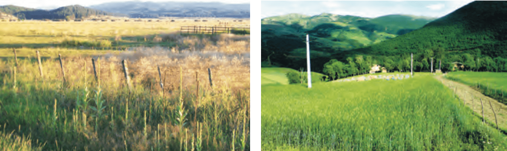
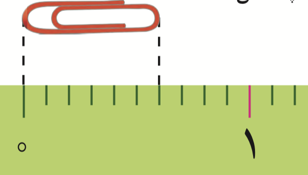
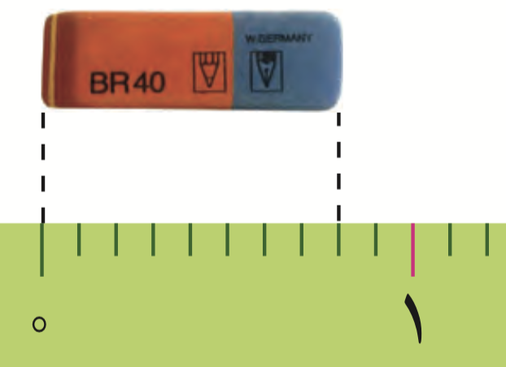

کسر
 فعّالیت
فعّالیت
۱- علی آقا کشاورز است و یک قطعه زمین مستطیل شکل دارد.او نیمی از زمینش را گندم کاشته است.
نیمی دیگر را دو قسمت کرده و در یک قسمت یونجه و در قسمت دیگر جو کاشته است.
به سؤالهای زیر پاسخ دهید
به سؤالهای زیر پاسخ دهید
در چند قسمت از زمین گندم کاشته شده است؟
قسمت از
قسمت مساوی
در چند قسمت از زمین جو کاشته شده است؟
قسمت از
قسمت مساوی
در چند قسمت از زمین یونجه کاشته شده است؟
قسمت از
قسمت مساوی

۲- فاطمه با نوار کاغذی که خودش آن را درجهبندی کرده بود طول یک گیرهی کاغذ و یک پاک کن را اندازه گرفته است
جاهای خالی را پرکنید.
در ریاضی ۲ قسمت از ۳ قسمت مساوی را با ۲/۳ نشان میدهیم و به آن یک کسر میگوییم و آن را دو سوم میخوانیم.
۴۶
جاهای خالی را پرکنید.
طول گیره کاغذ
قسمت از
قسمت مساوی است.

طول گیره کاغذ
قسمت از
قسمت مساوی است.
